Firstly, let's discuss why do we even need a PSU. A Power Supply Unit (PSU) is a PC component that provides the motherboard and the rest of the auxiliary components of the PC the clean DC power they need for their function. Below is a schematic of a SMPS power module.
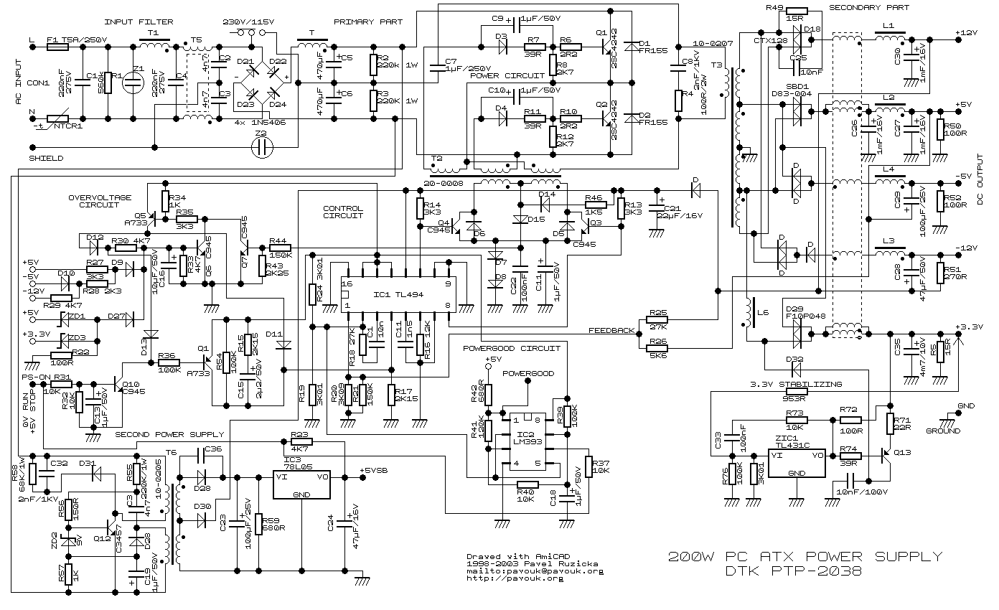
There was a time when I saw a schematic just like the one above and thought, what's the need for such sophistication? Like why can't a series of a transformer (for voltage conversion), a full wave-rectifier (AC-DC conversion), and a bunch of capacitors (to smooth out the power) be enough for the task? (Well, that was the same adolescent me who earlier tried to charge up a lead-acid battery by using stepped-down AC power.)
As a matter of fact, a device does exist that did the DC conversion as I thought out earlier (kudos to me), but the reason why we instead use SMPS in PCs is this—
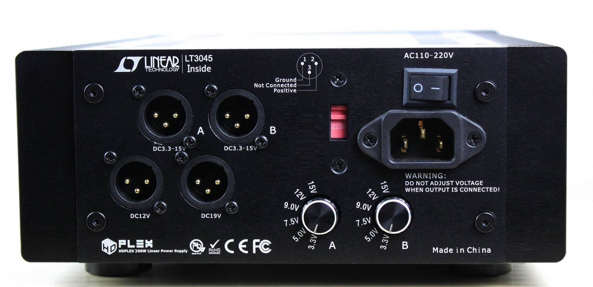
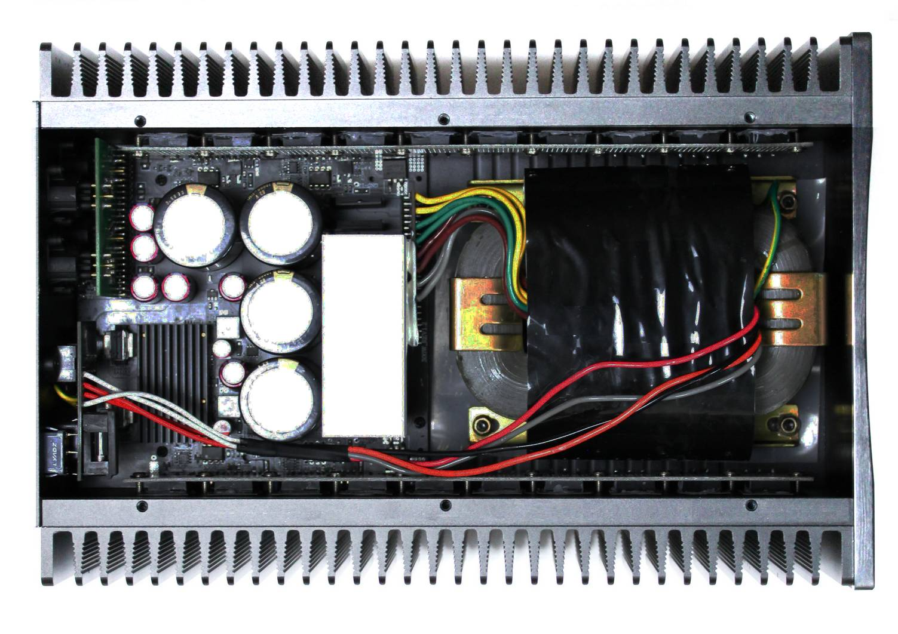
As you might have noticed already, a PSU of this kind is not something that can be placed in a mid-tower PC or in any PC, as a matter of fact. This type of PSU is called a Linear Power System (LPS). Though being this massive, they come with a bonus of being only ~40% efficient at converting the supplied AC power to DC, so the rest would be dissipated as heat. Wouldn't that be awesome? Trying to play Cyberpunk with RTX ON as the PSU works under full load, outputting a steady 600 watts while consuming an ungodly 1500 watts of power! Sweet! The CPU and GPU fans are screeching their lives out to prevent a Tj-max shutdown. Well, kudos to them. Let's see what they can throw at the PSU that would be rejecting 900 watts off of the input power, doubling as a room heater (thanks to the 40% efficiency).
Well, that's enough of joking around. Through this thought experiment, I want you to comprehend how the difference in a PSU's efficiency affects the working of the other components of the PC.
Thanks to their incredible complexity and engineering, these SMPS PSUs were capable of achieving efficiency figures north of 95% across a wide range of loads. Isn't that incredible?
Things to Consider While Buying a PSU
Whether you are building a new PC or your current PSU failed (never try to open a PSU, as the capacitors inside hold a significant charge even long after powering off). In the good old days, when you realised the SMPS was dead, you needed to check its wattage rating and buy a replacement with a wattage rating the same or more than the old unit. It used to be a similar story while building a PC. That's because the ATX standard got standardised all across PC platforms, so most components bearing the same standard are interchangeable, and a 200–300 watt PSU is adequate enough for the power requirements of those PCs. But gone are the days of that past. Here are the things we prefer you consider while building your PC or replacing your old one:
- Max power consumption of the components of your build
- Efficiency rating
- Fan placement and cooling solution
- Number of hard disk power connectors
- Availability of Molex connector
- Type of CPU pin connector (motherboard specific)
- Voltage specific load capability
- Holdup time
- Modularity
- Dimensions and possible installation configurations
- PCI-e pins availability
- Build quality, manufacturer reputation and product reviews
These were the criteria I suggest you check with your requirements, keeping the scope of futureproofing in mind. PSU is something we don't get to change/upgrade often, so you should buy the best fit for you right off the bat. Let's now review each of the criteria.
Power Rating
Calculate the power requirement of your build by adding up the TDPs of your CPU, GPU, Motherboard, RAM sticks, HDDs, SSDs, and auxiliaries like case fans, RGB lighting, dedicated CPU cooler, and so on. You might not be able to find the wattages of most of these components, but don't worry. A simple web search can fetch the approximate max wattage of each part. Summing up the wattage, keep in mind that this is the max wattage that your PC needs during peak use. Add 10% to it. Let's say the number you got is 530, you'd most likely be fine going with a 500 Watt power supply. But, I'd strongly suggest you consider a 600-watt PSU as this overprovisioning would ensure the PSU wouldn't reach its hard limit even during peak PC usage, preventing stressing the PSU components to their thresholds and risk of a shutdown. Also, having a PSU rated more than your current requirement means you'd be free to upgrade and add new auxiliaries without worrying about power issues.
Efficiency Rating
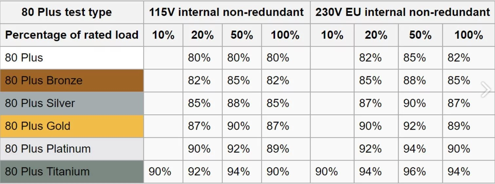
While shopping for PSUs, you'd notice 80plus bronze, gold, titanium, etc. Please refer to the above chart. It denotes the level of Input to Output efficiency the PSUs of each rating achieve under different load conditions. An efficient PSU not only helps with lower power consumption but also means that much less energy is being lost out as heat. This means less heat rejected by the PSU and less thermal strain on the rest of the PC components. A PSU with a higher rating comes with an added perk that higher quality material was used in its construction, ensuring it is robust and long lasting.
| 80 Plus Test Type | 115V Internal Non-Redundant | 230V EU Internal Non-Redundant | ||||||
|---|---|---|---|---|---|---|---|---|
| % of Rated Load | 10% | 20% | 50% | 100% | 10% | 20% | 50% | 100% |
| 80 Plus | 80% | 80% | 80% | 82% | 85% | 82% | ||
| 80 Plus Bronze | 82% | 85% | 82% | 85% | 88% | 85% | ||
| 80 Plus Silver | 85% | 88% | 85% | 87% | 90% | 87% | ||
| 80 Plus Gold | 87% | 90% | 87% | 90% | 92% | 89% | ||
| 80 Plus Platinum | 90% | 92% | 89% | 92% | 94% | 90% | ||
| 80 Plus Titanium | 90% | 92% | 94% | 90% | 90% | 94% | 96% | 94% |
Fan Placement and Cooling Performance
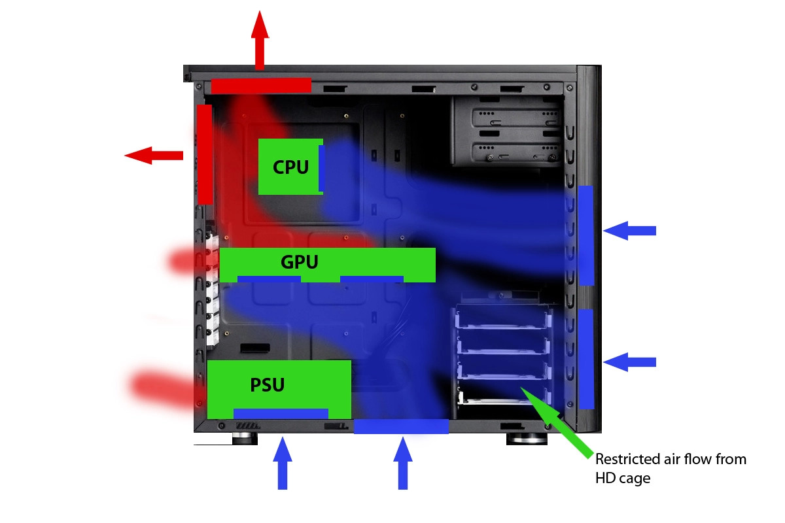
The direction of airflow within the CPU tower is a vital thing to consider while building a PC. Whether you want a positive pressure system, negative pressure system, or a linear flow as depicted in the above schematics. Each flow type comes with its own pros and cons. But while deciding the flow design, consider the direction in which the PSU's fan would be blowing its air. Mostly these would be in-fans blowing air onto its circuitry, so be mindful while installing the unit that the PSU's fan is facing outside. If placed inwards, the PSU intake would be sucking in hot air inside the case. This would result in unnecessary thermal stressing of PSU components, affecting their lifespan.
Also, what needs to be considered is the type of cooling solution that the PSU employs. PSUs commonly use fans. It's commonly understood that PSUs with more fans or fans with larger diameters (for example, 120mm), more RPM would be able to deal with rejected heat effectively. Fan design too plays a crucial role in airflow rate.
Hard Disk Power Supply
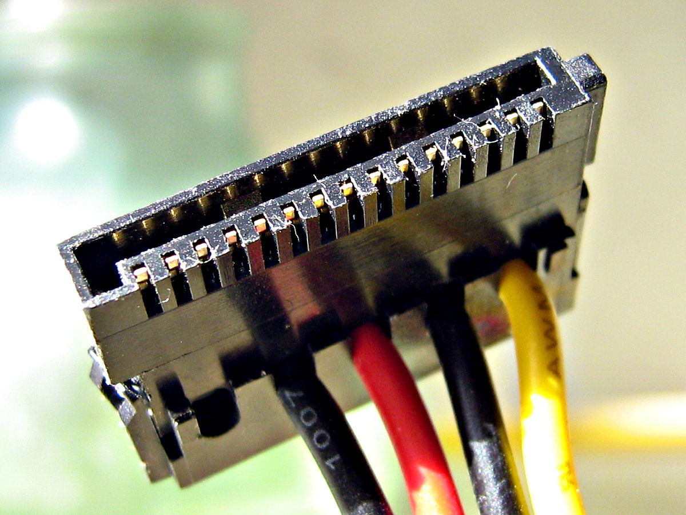
Having more than one SATA power pin would be helpful. It'd come in handy whenever you add an additional Hard Disk without resorting to "splitters." Also, having extra power connectors helps with redundancy in case one fails.
Molex Connectors
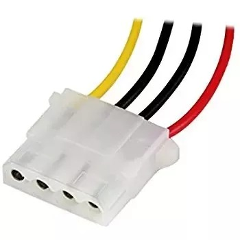
These types of connectors are used for powering PATA HDDs, DVD drives, and floppy drives of the past. But nowadays, these are mainly used for powering peripherals like case fans, dedicated CPU coolers, RGB lighting, etc. As gaming PCs tend to have more peripherals nowadays, having multiple Molex connectors is a thing to look out for. Though these can be daisy-chained, look out for the power output the PSU is rated for at this voltage.
2×4-Pin CPU Power Connector
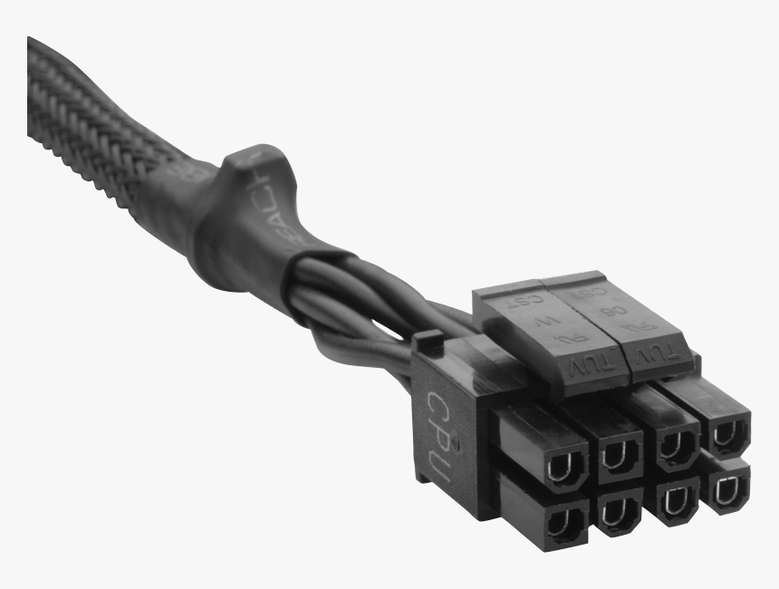
A 12-volt bus supplies the CPU unit with power. Actually, a whole bunch of electronics like VRMs, capacitors, and inductors refines the power even further before powering the CPU chipset.
Some motherboards use a single 4-pin connector to power this unit, while some motherboards need 2 of these connectors. So, it is better to ensure the PSU has a 4+4 Pin CPU connector.
Voltage Specific Load Capacity
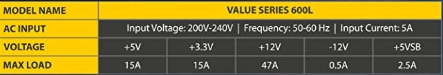
Having a 600-watt PSU would not mean it can support any load. Look out for tables like the above representing the power output the PSU can provide across different voltages. Below is a chart that gives you an idea of what components of the PC use the specific voltage outputs of the PSU:
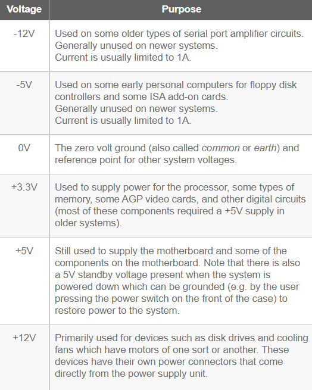
| Voltage | Purpose |
|---|---|
| -12V | Used on some older types of serial port amplifier circuits. Generally unused on newer systems. Current is usually limited to 1A. |
| -5V | Used on some early personal computers for floppy disk controllers and some ISA add-on cards. Generally unused on newer systems. Current is usually limited to 1A. |
| 0V | The zero volt ground (also called common or earth) and reference point for other system voltages. |
| +3.3V | Used to supply power for the processor, some types of memory, some AGP video cards, and other digital circuits (most of these components required a +5V supply in older systems). |
| +5V | Still used to supply the motherboard and some of the components on the motherboard. Note that there is also a 5V standby voltage present when the system is powered down which can be grounded (e.g. by the user pressing the power switch on the front of the case) to restore power to the system. |
| +12V | Primarily used for devices such as disk drives and cooling fans which have motors of one sort or another. These devices have their own power connectors that come directly from the power supply unit. |
Holdup Times
The number denotes the time in ms (millisecond) that the PSU can bridge between power supply outages. Let me explain its importance. Sometimes the power supply out of the socket fluctuates due to sudden loads on the local grid. Even if the PC is on a UPS, the UPS takes a fraction of a second to come online. If the holdup capacity is too low, the PC turns off seemingly instantaneously due to a micro-power outage that we can't even perceive. Capacitance in the PSU is used to help achieve this capability.
Modularity
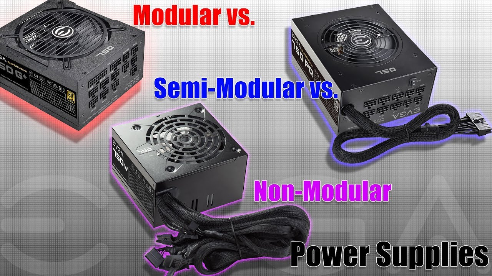
A fully modular PSU implies that the PSU is a stand-alone unit where all the connectors can be connected or removed as per requirement. This type of PSU is favored for clean builds and for the relief that a damaged wire wouldn't deem the entire PSU useless.
Semi-Modular is similar, but here the motherboard connector is fixed. Although it might look like a compromise, I recommend this type of PSU. Although the PSUs are standardised, the same is not true for the motherboard connectors. Based on my experiences, at least for the time being, I suggest you use the motherboard connector that came with the respective PSU or of the same brand.
Non-Modular PSUs have all the connector wires attached to the PSU, requiring cable management to be performed to hide and manage the unused pins and wires.
PCI-e Power Pins
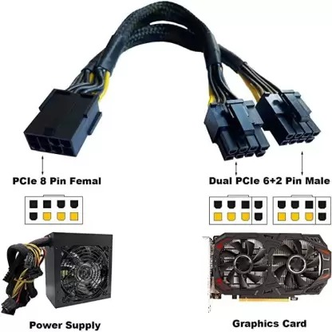
As the GPU kept getting more powerful, so did grow their thirst for power. Typically the PCI-e port on the motherboard was used to power them, but as the processing power of GPUs kept on rising, auxiliary power pins were employed to supply them with the required power. This is done by a 6-pin connector capable of providing the GPU with a maximum of 75 watts of power. Newer GPUs require an 8-pin connector delivering 150 watts of power. This is done by a 6+2 connector. With what we witnessed in RTX 40 series, we need not be surprised if upcoming GPUs demand even more power. So, if you are a gamer or a person whose workflow depends heavily on graphic-intensive tasks, it is better to opt for a PSU that has more of these pins.
Product Quality and Manufacturer's Reputation
Lastly, I strongly suggest you refer to the customer and expert reviews on the PSU before purchasing based on its specs. Look for connector cable issues, cable quality, pin quality, etc. PSU is a long-time purchase as most of them last for nearly a decade, so choosing the right one is paramount instead of just going with the numbers on spec sheets. A poorly designed PSU from a shady manufacturer might not only fail early but also risk damaging the rest of the PC components.
I hope I covered most of the topics you might need to know before buying a PSU for your PC.